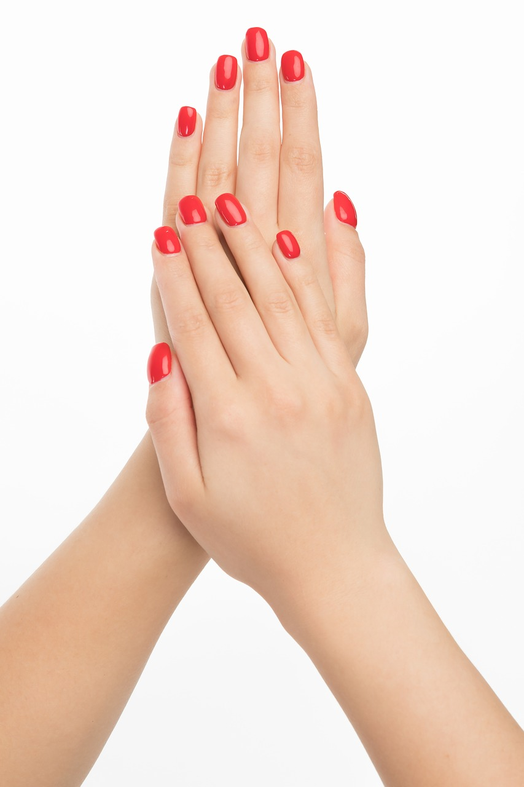
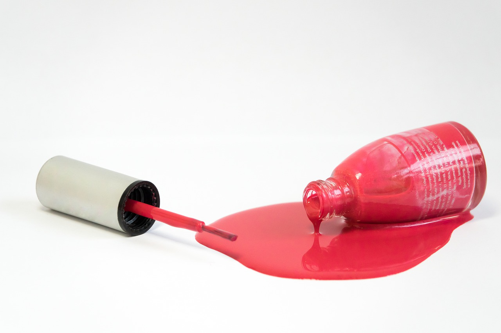

01.08.2019
За ногтями ухаживали еще тысячи лет назад. Известно, что самый
древний маникюрный набор был обнаружен археологами на территории
Древнего Вавилона (современная территория Ирака). Правда, едва ли
там была апельсиновая палочка и баф.
В Древнем Египте длина и цвет ногтей указывали на сословную
принадлежность человека — так, у представителей знати маникюр был
ярким.
Царица Клеопатра для украшения своих ногтей и рук использовала
хну, а в уходе применяла масла.
В Древней Греции и Риме была особая категория рабов — косметы.
Они помогали особам благородного происхождения в уходе за собой.
В том числе полировали ногти, используя специальный состав с
животным жиром.
Прообраз современных лаков для ногтей появился в древнекитайской
цивилизации. Это была краска, изготовленная из измельченных
минералов, воска, яичных желтков и гуммиарабика. Также есть
информация, что для украшения ногтей использовали золотую пыль.
В Древнем Китае ногти старались отращивать. И не в современном
понимании, а до 25 см (куда там современному наращиванию)! Это
считалось верным способом уберечь себя от злых сил. Те же, кому
не удавалось достичь «эталонной» длины (поскольку ногти попросту
ломались), надевали на пальцы заостренные металлические
наконечники.
01.08.2019
1. Уход за ногтями неслучайно требуется нам так часто: они
растут со скоростью примерно 0,1 мм в сутки.
2. Скорость роста ногтей не всегда одинакова. Летом, в сезон
открытой обуви они растут быстрее, а зимой — медленнее.
3. 30% — почти треть длины ногтя приходится на его корневую часть.
Она, кстати, скрыта под кожей.
4. «Здоровая» толщина ногтевой пластины составляет около 0,3 мм.
Это около 100-150 слоев кератина (из него состоят не только
волосы, но и ногти).
5. Вредная привычка грызть ногти однажды принесла пользу. Чтобы
избавить от нее своих пациентов, стоматолог по имени Максвелл
Лаппе в 1934 году придумал специальные пластинки, которые вскоре
стали популярны как накладные ногти.
01.08.2019
1. Формула стойких покрытий такова, что они не высыхают, а
затвердевают под воздействием УФ-лучей в специальной лампе. Этот
процесс в профессиональных кругах известен как полимеризация.
2. Многие мастера говорят о необходимости делать перерыв после
долгого использования гель-лаков, чтобы ногти «подышали». На
самом деле ногти — это слои ороговевших клеток, в которых не
происходят обменные процессы. И «отдых» от гель-лака им не
поможет. Чтобы они росли более здоровыми, достаточно использовать
масло, которое питает матрикс ногтей — он скрыт под кутикулой у
основания ногтевой пластины.
3. Если при создании маникюра с гель-лаком соблюдать все
технические тонкости, покрытие не только не навредит ногтям, но и
сделает их сильнее, так как послужит им защитой от внешних
воздействий.